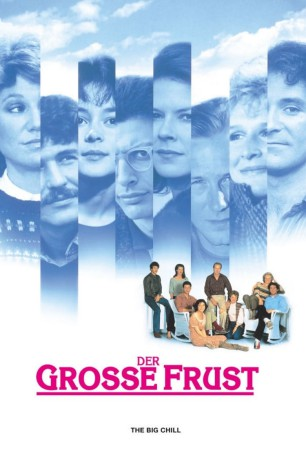

#10791 Der Große Frust
Alternativ: The Big Chill (Englischer Titel)
Auszeichnungen: für 3 Oscars nominiert
 
 IMDB-Wertung: 7.2 / 10
IMDB-Wertung: 7.2 / 10  Metascore: 61
Metascore: 61 
Sieben Freunde, drei Frauen und vier Männer, die in den 60er Jahren gemeinsam studiert haben, treffen sich nach langen Jahren wieder. Nur Alex, der Achte im Bunde, fehlt. Er hat sich aus Frust die Pulsadern aufgeschnitten. Zu seiner Beerdigung haben sich alle wieder versammelt. Während eines Wochenendes lassen die Hinterbliebenen ihre Biographien Revue passieren.
Jahr: 1983
Dauer: 100 Minuten
FSK: 16
Land: USA Studio: Columbia Pictures CorporationTonspuren:
Untertitel:
Auflösung: 1080p (1920x1080) Größe: 5662 MB
Genre: Drama, Komödie
Regisseur:  Lawrence Kasdan
Lawrence Kasdan
Drehbuch: Lawrence Kasdan, Barbara Benedek
Soundtrack:
Darsteller:
Datei: X:\1983\Große Frust, Der (1983, FSK16, 1920x1080).mkv seit 08.03.2019
Festplatte: HD 1980-1986
 Es gibt insgesamt 35 Filme in der Gruppe '1983'
Es gibt insgesamt 35 Filme in der Gruppe '1983'